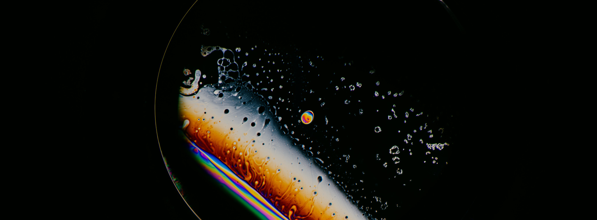

The Bubble Lab
The BubbleLab @Imperial MechEng specialises in the fluid mechanics of liquid interfaces, most notably, of bubbles, droplets and foams. We aim to understand the fundamental question of "Why does a bubble pop?" and the fundamental multi-scale mechanisms through which rupture and phase transitional processes occur.